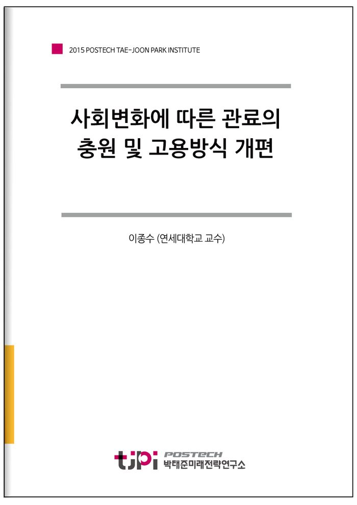

저자 이종수 (연세대학교 교수)연재일 2016-2-25

요 약
사회변화에 따른 관료의 충원 및 고용방식 개편
이 종 수 교수
연세대학교 행정학과
위로는 세계기구와 지역블럭
아래로는 지방분권
수평적으로
NGO
와 민영화로 이른바
정부 없는 거버넌스
’(governance without government)
의 시대가 개막될 것이라는 예측이 지배해 왔다
그러나
실제 정부가 축소되는 현상은 어디에서도 관찰되지 않고 있다
21
세기에도 국가의 발전과 통합에 정부는 절대적인 역할을 수행할 것이다
그것은 곧 고위 관료의 역할이 그만큼 중요하다는 뜻이다
한국에서 과거
10
년 동안 국회가 정치권력을 급속히 확대해왔지만
여전히 예산과 인력 그리고 정책 및 규제에서 행정부 관료의 역할은 지대하다
본 연구는 다양한 문헌과 통계
그리고 심층면접 방법을 통하여 한국 관료의 역량을 제고할 수 있는 방안을 진단하였다
심층면접은
2015
급 공채시험에 면접위원으로 참여한 정부의 전
현직 국장
현직 교수
그리고
2015
급 공채시험에 합격한
명의 합격자를 대상으로 진행하였다
세 가지의 중요한 개선과제가 도출되었다
첫째
고급 관료의 등용문인
급 공채시험은 객관성과 공정성에 대한 사회적 요구의 무게에 의해 정작 내용적 타당성이 심각하게 훼손되어 왔다
타당성은 시험이 직무역량을 평가하는 수준을 의미하는데
이것을 제고할 필요성이 절실하다는 의미다
현재
급 공채시험의 타당성을 개선하는 가장 핵심적 과제는 면접시험 개선이다
. 2
차 필기시험의 지식위주 지필고사가 갖는 한계를 극복하는 궁극적 대안이 결국
차 면접이다
2015
년 면접에 참여한 면접위원
명을 심층면접 한 결과
, ‘
주어진 평가항목을 평가하는 것이 불가능에 가까웠다
고 응답했다
특히
현재의 면접방식과 문항으로는 공무원으로서의 정신자세
창의력
발전가능성 항목에 대해서는 평가를 할 수 없다는 반응이 주류였다
2015
년 면접의 진행은 이틀에 걸쳐 진행되었는데
첫날은 직무역량 검증 면접이었고
둘째 날은 공직 가치관을 주로 면접하였다
그러나
, “
지문을 단순 요약만 하여도 누구나 충분히 답을 이야기 할 수 있었다
.”, “2
차 필기시험의 수준에 미치지 못하는
, 2
차 시험의 연장
이라는 면접위원들의 반응이 나왔고
합격자들도
무엇을 이야기해야 하는 지
다소 뻔한 내용의 지문이 주어졌다
.”
고 반응했다
면접의 세팅 자체가 형식적
표피적 답변과 토론에 머물게 하는 상태다
청렴한 공직자의 필요성에 대한 상투적 인정
정권의 코드에 신경을 쓰는 답변이 대부분의 수험생에 의해 제시되고
그룹 토론에서는 상호 위험을 떠안지 않기 위해 중간 수준의 상투적 질문과 답변에 그치는 것이 대부분이었다
이것을 개선하기 위해 문제해결형 과제를 제시하여 창의력과 기획력
그리고 발전 가능성을 평가하는 문제개발과 방식개편이 필요하다
딜레마 상황
어려운 문제
(wicked problem)
을 개발하되
정권의 입장에 눈치를 보게 할 우려가 있는 문제는 피해야 한다
둘째
, 5
급 공채시험의 장기적 개혁과제로 트랙을 다양화 하는 방안이다
. 1)
면접을 개선한
급 공채
, 2)
민간 경력자 채용제도
, 3)
대학의 전공과 적성을 그대로 살릴 수 있는 새로운 신규채용 트랙을 공존시켜야 한다
. 3)
번이 새롭게 제안하는 트랙이다
현재 평균
년에 걸친
급 공채시험의 준비기간이 개인과 사회에 커다란 부담일 뿐 아니라
조직 순응형으로 수험생을 변모시키는 것외에 공직 수행에 필요한 역량을 개선시키는 효과는 약하다
민간 경력자
급 일괄채용 제도를 정부가
2011
년 도입한 바 있으나
높은 경쟁률에도 불구하고 이 방식이 과거의 행정고시 순혈주의와 카르텔을 견제할 수 있을 만큼 유능한 인재들을 공직으로 유인하기는 어렵다
따라서
평균
년에 걸친 시험준비 기간을 제거하면서
전공과 적성을 그대로 살릴 트랙을 개발하는 것이 긴요하다
셋째
정부가 모범적 고용주로서
파트 타임
비정규직이라는 고정 관념을 깨고 정규직 공무원의 고용형태로서 파트타임 고용방식을 크게 확대해야 한다
영국 잉글랜드와 웨일즈 지역 지방정부 공무원
1,840,600
명 중 여성 파트 타임 인력이
48.3%
에 달하고 있고
남성 파트타임도
6.6%
에 이른다
한국의 경제인구 변화
여성의 경제활동
가족친화적 근무형태의 필요성을 종합하면
결국 파트 타임의 고용형태를 정규직 공무원의 일부로 적극 확대하는 방안이 절실하다
넷째
독일의 경우
정부부처 내에 공무원 신분이 아닌
공근무자
가 전체 인력의
40%
를 차지한다
이들은 공직자이기는 하지만
공무원은 아니다
신분상 국가공무원법의 적용을 받지 않으며
민간부문의 근로자와 다를 바 없이 평생 고용을 인정하지 않은 채
근로에 대한 직접적 댓가로 보수를 지급하며
파업 권한을 인정받는다
이 방식은 공무원만 존재하는 공직사회에 보수
일하는 방식에서 엄청난 유연성을 선사하고
유전자의 다양성을 주입하는 효과를 가져다 준다
독일의 공근무자 형태의 인력보완을 심각하게 고려할 필요가 있다
목 차
이종수
연세대학교 행정학과 교수
학력
연세대학교 행정학과 졸
연세대학교 대학원 행정학과 석사
영국 Sheffield 대학교 Ph.D.
주요 경력
현 연세대학교 행정학과 교수
미국 예일대학교 로스쿨 Fulbright 방문교수
일본 입교대학교 초빙연구원
대통령직속 지역발전위원회 위원
헌법재핀소 제도개선 위원
행정자치부, 외교통상부 자문위원
행정고시 출제 및 채점위원
주요 저서 / 논문
『공동체: 유토피아에서 마을만들기까지』
『한국사회와 공동체』
『정부혁신과 인사행정』
내 용
[2015 연구논문] 사회변화에 따른 관료의 충원 및 고용방식 개편
이종수 (연세대학교 교수)